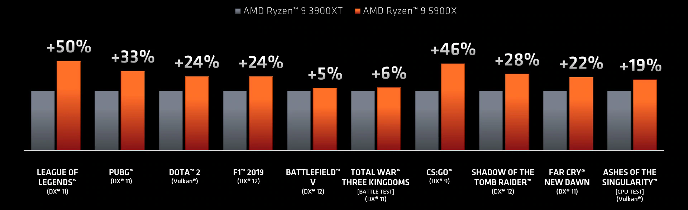

Если вы ищете себе десктопное решение, то для выбора выделяют две компании - AMD и Intel. В каждой из двух компании можно выделить свои определенные линейки настольных процессоров. Каждая из которых имеет свои достоинства и недостатки.
Настольные решения от AMD
Компания AMD для получения максимальной производительности компьютера производит процессоры под маркой ThreadRipper. Данная линейка позволяет выполнять одновременно множество ресурсоемких задач за счет большого количества ядер(от 16 в бюджетной комплектации до 64 в максимальной).
Процессоры Ryzen™ Threadripper™ 3-го поколения будут работать на материнских платах AMD TRX40 — первой в мире высокотехнологичной платформе для настольных ПК, поддерживающей передовой интерфейс PCIe® 4.0. Эта мощная, масштабируемая и перспективная4 платформа обеспечивает максимальное количество операций ввода-вывода и возможностей расширения, а также установку нескольких видеокарт и массивов NVMe.5
Благодаря максимально возможному количеству каналов памяти для настольного ПК6 процессор Ryzen™ Threadripper™ может поддерживать стандартную для рабочей станции память DDR4 ECC (с кодом исправления и коррекции ошибок), предлагая возможности постоянного контроля, регулирования настроек и идеальной синхронизации.
Процессоры Ryzen™ Threadripper™ позволяют объединить до шести NVMe-дисков, чтобы добиться высочайшей скорости и надежности. Так же есть возможность получить удвоенную пропускную способность благодаря поддержке интерфейса PCIe® 4.0, предназначенного специально для высокотехнологичных настольных ПК на базе материнских плат AMD TRX40. Спецификации всех моделей AMD Ryzen™ Threadripper™ можно узнать на официальной странице сайта AMD.
Так же стоит упомянуть серию Ryzen™ R7 и Ryzen™ R9, которые за свою меньшую в сравнении с линейкой Threadripper™ стоимостью, так же обеспечивает превосходную производительность для повседневных и профессиональных задач. Спецификации всех моделей AMD Ryzen™ для настольных ПК можно узнать на официальной странице сайта AMD. Далее будет представленна сравнительная характеристика по производительности двух поколений Ryzen™9 3900XT и Ryzen™9 5900X в играх.

Настольные решения от Intel
В свою очередь, компания Intel предоставляет топовую линейку процессоров i9 10-го поколения, которая не уступает по произвоизводительности лучшим решениям от AMD.
Положительными качества линейки Intel® Core™ 10-го поколения:
- Встроенные интеллектуальные функции оптимизируют производительность для адаптации к выполняемым задачам за счет динамического перераспределения ресурсов. Процессоры Intel® Core™ 10-го поколения с памятью Intel® Optane™ обеспечивают необходимое быстродействие для выполнения большего количества задач
- Процессоры Intel® Core™ 10-го поколения с встроенными адаптерами Intel® Wi-Fi 6 (Gig+), Intel® Ethernet Connection 1225 и технологией Thunderbolt™ 3 обеспечивают быстрые, надежные и универсальные возможности проводной и беспроводной связи.
- Новая графическая архитектура обеспечивает высочайшее качество изображения, в частности поддержку видео 4K HDR и игр в разрешении 1080p. Процессоры Intel® Core™ 10- го поколения с графической системой Intel® Iris® Plus поднимают качество графики в развлекательных приложениях на новый уровень.
Так же в семействе процессоров Intel® Core™ серии X разблокирован множитель для обеспечения дополнительного запаса производительности. Функции включают: возможность оверклокинга1 каждого ядра в отдельности, управление коэффициентом AVX для повышения стабильности, а также управление напряжением VccU в экстремальных сценариях. В сочетании с такими инструментами, как Intel® Performance Maximizer, Intel® Extreme Tuning Utility (Intel® XTU) и Intel® Extreme Memory Profile (Intel® XMP) вы получаете мощный набор для достижения максимальной производительности. Далее идет сравнительная характеристика процессора из последней линейки Intel с процессором Intel трехлетней давности.
Сравнительная характеристика и выводы:
Теперь можно поговорить о сравнении процессоров AMD и Intel®, о их преимуществах и недостатках перед друг другом. У каждого процессора разная архитектура, что напрямую влияет на его производительность. У каждого процессора есть ряд основных параметров:
- Частота
- Количество ядер
- Графическое ядро
- Техпроцесс
- Кэш
Количественные параметры Core i9-10980XE и Ryzen 9 5900X:
- число ядер и потоков: 18 против 12;
- тактовые частоты: 3.00 ГГц против 3.7 ГГц в тактовой частоте и 4.8 ГГц для обоих процессоров в максимальной;
- объем кэша 1-го уровня: 64Kб (на ядро) у Intel и 768 Кб (всего) у AMD
- объем кэша 2-го уровня: 1 Мб (на ядро) у Intel и 6 Мб (всего) у AMD
- объем кэша 3-го уровня: 24.75 Мб (всего) у Intel 64 Мб (всего) у AMD
- техпроцесс: 14 нм у Intel и комбинированный техпроцесс 7нм и 12нм у AMD
Данные параметры косвенным образом говорят о производительности данных процессоров, но для точной оценки необходимо рассмотреть результаты тестов:
Результаты показали, что в основном новейшее решение от AMD лидирует в тестах различных бенчмарков на одно ядро с большим отрывом. В многоядерных тестах разрыв уменьшается, но Ryzen 9 5900X все еще лидирует по производительности.
Так же стоит ознакомиться со сравнительной характеристикой процессоров Intel и AMD бюджетных линеек в играх, где ситуация примерно одинаковая, в отличие от высокобюджетных моделей